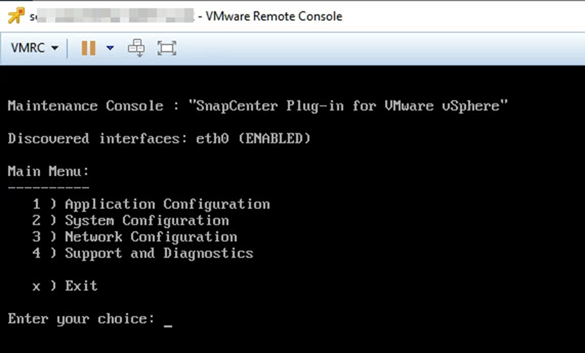

Demander de modifier un document
Demander de modifier un document Modifier sur GitHub
Modifier sur GitHub Guide des contributeurs
Guide des contributeursSauvegardez le plug-in SnapCenter pour la base de données MySQL VMware vSphere
Contributeurs
Le plug-in SnapCenter VMware comprend une base de données MySQL (également appelée base de données NSM) qui contient les métadonnées de tous les travaux effectués par le plug-in. Vous devez sauvegarder régulièrement ce référentiel.
Vous devez également sauvegarder le référentiel avant d’effectuer des migrations ou des mises à niveau.
Ne démarrez pas un travail pour sauvegarder la base de données MySQL lorsqu’une tâche de sauvegarde à la demande est déjà en cours d’exécution.
-
Dans le client web VMware vSphere, sélectionnez la machine virtuelle sur laquelle se trouve le plug-in SnapCenter VMware.
-
Cliquez avec le bouton droit de la souris sur la machine virtuelle, puis sur l’onglet Résumé de l’appliance virtuelle, cliquez sur lancer la console distante ou lancez la console Web pour ouvrir une fenêtre de la console de maintenance.

-
Dans le menu principal, entrez l’option 1) Configuration de l’application.
-
Dans le menu Configuration de l’application, saisissez l’option 6) sauvegarde et restauration MySQL.
-
Dans le menu de configuration de MySQL Backup and Restore, entrez l’option 1) Configure MySQL backup.
-
À l’invite, entrez l’emplacement de sauvegarde du référentiel, le nombre de sauvegardes à conserver et l’heure de démarrage de la sauvegarde.
Toutes les entrées sont enregistrées lors de leur saisie. Lorsque le numéro de conservation de la sauvegarde est atteint, les anciennes sauvegardes sont supprimées lorsque de nouvelles sauvegardes sont effectuées.

Les sauvegardes du référentiel sont nommées « sauvegarde-<date> ». Comme la fonction de restauration du référentiel recherche le préfixe « sauvegarde », vous ne devez pas le modifier.